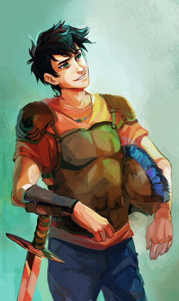

| Percy Jackson |
 |
Percy Jackson é o personagem principal da série Percy Jackson e os Olimpianos. Percy é um semideus grego, lindo, filho de Poseidon e Sally Jackson e é atualmente o único habitante do Chalé de Poseidon. É meio-irmão de Tyson. Namorado de Annabeth Chase. |
| Grover Underwood |
|
Grover Underwood é um sátiro, amigo de Percy Jackson e Annabeth Chase. Ele também foi o sátiro que encontrou Thalia, e mais tarde foi designado para proteger Percy. Ele também descobriu Nico e Bianca di Angelo, todas as crianças dos Três Grandes. Foi ele quem reconheceu Percy como meio-sangue primeiro e o levou ao Acampamento Meio-Sangue. |
| Annabeth Chase |
|
Annabeth Chase é uma semideusa grega , filha da deusa Athena e do professor Frederick Chase , prima do semideus nórdico Magnus Chase e um tio dela é Frey . Annabeth é uma das personagens principais da série Percy Jackson e os Olimpianos , bem como da série Heroes of Olympus , já que é um dos Sete semideuses da Profecia dos Sete . Annabeth é a arquiteta do Olimpo e ex-conselheira-chefe da cabana de Atena . Annabeth é atualmente namorada de Percy Jackson. |